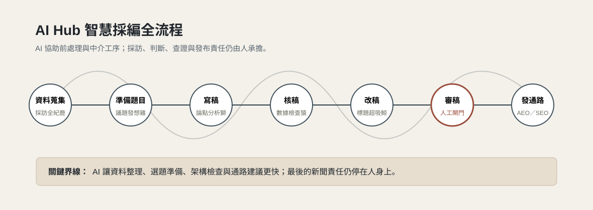
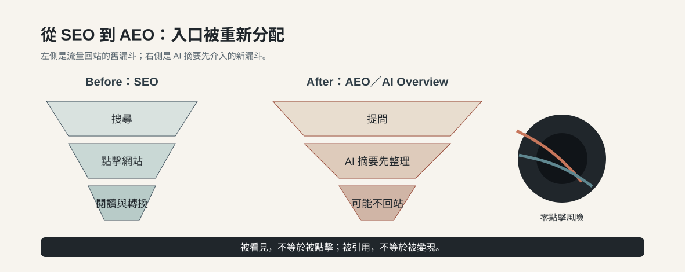
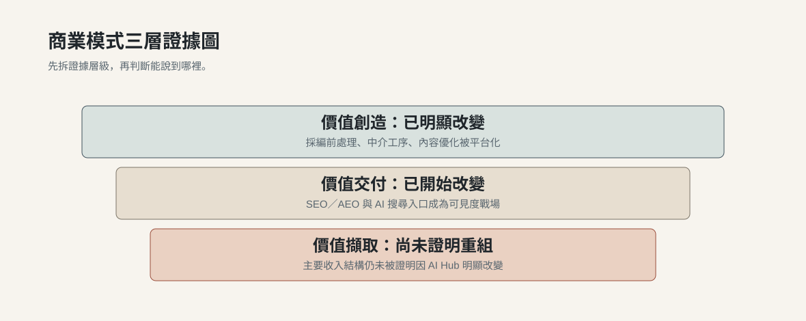
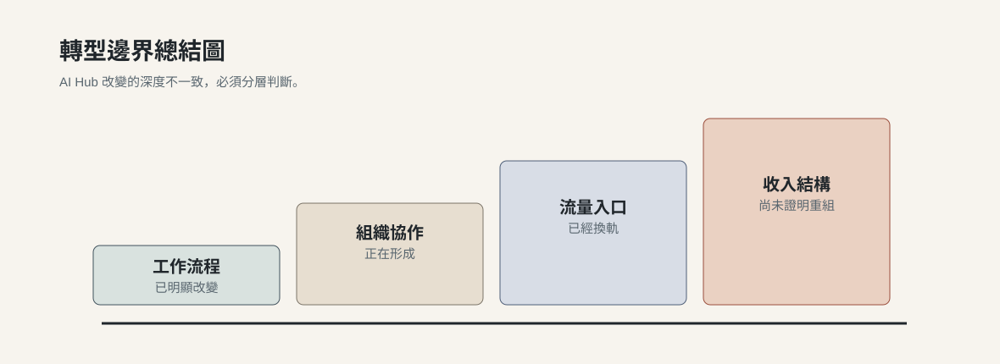

AI Hub 明顯改變了工作流程
記者不再只是靠個人手動完成資料整理、逐字稿分析、趨勢蒐集與架構檢查。AI Hub 讓這些前處理與中介工作被模組化，記者角色也從純執行者部分轉向問題定義者、流程指揮者與品質把關者。
互動式調查報告
AI Hub 改變了《天下雜誌》的新聞現場，但還沒有改寫收入表。它最深的影響，是把資料蒐集、逐字稿整理、題目發想、論點檢查、標題優化與 AEO 建議，納入新聞生產、搜尋競爭與信任治理的核心流程。
01 破冰開場
天下面對的不是單純 AI 技術挑戰，而是資訊入口、信任單位與商業變現同時換軌。
這個案例不能只從工具導入開始看。媒體業的焦慮不只是紙本衰退或營收壓力，而是人們取得資訊的方式已經改變。新聞入口從網站首頁、Google 搜尋，逐步轉向 YouTube、Instagram、TikTok、Podcast、KOL、AI Overview 與答案引擎。
KOL 與記者 KOL 化不是題外話。當 AI 與大量個人內容同時出現，讀者越來越需要知道：這篇是誰寫的？這個人是否真的進現場？能不能查證並負責？《天下》開始要求記者自介更完整，包含得獎、跑線、專長與經歷，正是信任單位重組的訊號。
02 內部核心 1
AI Hub 不是多做一個數位產品，而是開始往編輯部內部長進去。

過去數位轉型主要是內容產品數位化、訂閱化與多平台化；AI Hub 的差異在於 AI 開始進入新聞生產流程本身。它協助逐字稿整理、趨勢查找、架構檢查、潤稿、標題優化與 AEO 建議，但最後下筆、判斷與查證仍由記者完成。
這也解釋了為什麼 AI Hub 的重點不是取代記者，而是加速前處理與中介工序。記者角色從單純執行者，部分轉向問題定義者、流程指揮者與品質把關者。
03 內部核心 2
AI Hub 的組織挑戰，不是員工會不會用 AI，而是公司能否在標準化治理與記者工作手感之間找到平衡。
公司端已提供付費 Gemini，曾提供付費 ChatGPT，後來因公司考量轉向 Gemini；同時也建置逐字稿網站與編輯台 AI 工具。不過，第一線仍約一半使用公司 AI、一半使用個人 AI，記者也會並用 ChatGPT、NotebookLM、Gemini、Claude。
這種並存不是不服從，而是新聞工作本來需要判斷、觀點與個人手感。公司 AI 提供模板、格式與可治理流程；個人 AI 則更能刺激觀點、補足盲點，並貼合個人習慣。
管理模式尚未全面改變，但內部網站後台已有明顯改版：過去用 Excel 管理題目、角度與獨特性；AI 導入後，送題前可選擇是否讓 AI 協助選題。AI 產出的題目仍被認為太像 AI，數位營運部也會蒐集記者使用回饋，判斷哪些工具值得優化、哪些工具用不到。
04 外部應用 1
AEO 不是行銷部門額外加上的 KPI，而是內容從發想、下標到內文結構都要提早考慮的新可見度戰爭。
過去媒體重視 SEO，因為被 Google 抓到，讀者才可能點進網站。受訪者提到，總編常提醒要讓 Google 抓到文章，否則內容再好也可能沒有點閱。
現在 AI Overview 與 AI 搜尋改變了漏斗。讀者可能不再點進多個網站，而是直接看 AI 摘要。《天下》每月流量分析新增 AI 搜尋資料，會比較《天下》與商周等競媒在 AI 搜尋中的出現比例。

05 外部應用 2
AI Hub 已經改變商業模式的運作邏輯，但尚未被證明改寫主要收入結構。
《天下》在 AI Hub 之前，已經不是單一紙本媒體。它早已走向數位訂閱、數位廣告、會員、Podcast、AI 語音朗讀、線上課程、論壇與學習服務等混合模式。判斷 AI Hub 是否改變商業模式，不能只看有沒有導入 AI，而要看價值創造、價值交付與價值擷取三層。

| 層次 | 變化程度 | 本案判斷 |
|---|---|---|
| 價值創造 | 已明顯改變 | 採編前處理、中介工序、內容優化被 AI Hub 平台化。 |
| 價值交付 | 已開始改變 | SEO／AEO 與 AI 搜尋入口變成內容可見度戰場。 |
| 價值擷取 | 尚未證明重組 | 主要收入結構仍未被證明因 AI Hub 明顯改變。 |
流程效率提升與入口變化，是商業模式「運作邏輯」改變；但主要收入結構是否重組，還需要更直接的營收證據。
06 結論與總結
AI Hub 的最大意義，不是它已經創造新的收入表，而是它讓媒體開始把 AI 納入新聞生產、搜尋競爭與信任治理的核心戰場。

記者不再只是靠個人手動完成資料整理、逐字稿分析、趨勢蒐集與架構檢查。AI Hub 讓這些前處理與中介工作被模組化，記者角色也從純執行者部分轉向問題定義者、流程指揮者與品質把關者。
管理制度還沒有全面重組，但後台網站、選題流程、數位營運部與記者之間的回饋機制已經改變。內容部門、技術部門與數據團隊開始形成共同調整工具的協作迴圈。
媒體不再只需要被 Google 搜尋抓到，也要思考如何被 AI Overview 與答案引擎看見、理解、引用與呈現。
目前最嚴格的判斷是：AI Hub 正在改變商業模式的底層運作邏輯，但還沒有足夠證據證明它已經改寫主要收入結構。
真正重要的不是每個記者自己開聊天工具，而是如何把選題、資料整理、逐字稿、標題、論點檢查與 AEO 建議串成可治理的工作鏈。
媒體真正的護城河仍然是信任、現場感、查證能力與記者專業。AI 可以整理資訊，但不能取代記者進現場、判斷線索與建立消息來源。
AI Hub 導入後，真正的挑戰是員工是否學會使用、公司是否建立規範、工具是否貼合現場需求，以及人工審核是否真的成為底線。
AEO 可以提高被看見的機會，但 AI 答案引擎也可能吸收原本應該回到媒體網站的點擊。若只追求被 AI 引用，卻沒有想清楚如何轉換為信任、會員或收入，仍可能落入有曝光、沒變現的困境。